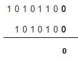

Coming directly to the topic without wasting any time, first we have to look into the four fundamental steps of binary subtraction. These are
0 – 0 = 0
0 – 1 = 1, borrow 1 from the next more significant bit
1 – 0 = 1
1 – 1 = 0
As there are only two digits in binary number system 0&1 that’s why these four steps are able to describe all the operations of binary subtraction.
Now we will discuss the process elaborately with the help of few examples.
Suppose A = 10101100 And B = 1010100 and we want to find out A - B
Now implementing the rules of binary subtraction

The first step is 0 - 0 = 0 and that’s what is written in the place for result
Similarly again the last step is repeated as here the numbers are both 0 and from the table we know 0 - 0 = 0
From the table we can find out that 1 - 1 = 0 and it is written
The table shows that 1-0=1 and we have written exactly that in result
Here 0 - 1 = 1 with borrowing of 1 from the next significant bit and that’s what has been done. We will treat the next 1 as 0 in the next step as shown below.
As the 1 was borrowed in the previous step we are treating the 1 as 0 and the result is 0 - 0 = 0 and that is written
Again the last 1 has been borrowed because the operation done was 0 - 1 = 1 with borrow 1 from the next most significant bit. And the final result of binary subtraction, we got is written in the place of result in the final step.
 by
by